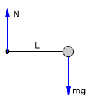
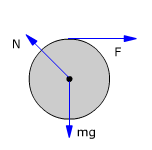

General
La masa puntual de 3 kg está unida a una varilla, de masa despreciable y longi-tud 1 m, con un eje perpendicular al plano de la pantalla que pasa por su extre-mo libre. Calcula el momento sobre el sistema y su aceleración angular |
Solución
Momentos respecto al eje:
 |
Momento resultante:
$$M=M_{mg}=1\ \mathrm{m}\;3\ \mathrm{kg}\;9{,}8\ \mathrm{\frac{m}{s^2}}=29{,}4\ \mathrm{N\cdot m}$$

Este momento hará que la varilla comience a girar en el sentido de las agujas del reloj.
Aplicando la ecuación de la Dinámica:
$$M=I\,\alpha\;\rightarrow\;\alpha=\frac{M}{I}$$
$$\begin{aligned}&\alpha=\frac{L\,m\,g}{\htmlData{pc-ac=ac1}{\boxed{m\,L^2}}}=\frac{g}{L}\\[6pt] &\alpha=\frac{9{,}8\ \mathrm{m/s^2}}{1\ \mathrm{m}}=9{,}8\ \mathrm{\frac{rad}{s^2}}\end{aligned}$$
2Una barra de 4 m y masa despreciable tiene un apoyo en su punto medio. En los extremos se suben un niño de masa m1 = 30 kg y otro de masa m2 = 40 kg. Se suelta la barra, calcular el momento sobre la barra y su aceleración angular
|
|
Lista problemas |
Solución
| Momentos respecto al eje:
$$M_{m1g}=2\ \mathrm{m}\;30\ \mathrm{kg}\;9{,}8\ \mathrm{\frac{m}{s^2}}=588\ \mathrm{N\,m}$$ $$M_{m2g}=2\ \mathrm{m}\;40\ \mathrm{kg}\;9{,}8\ \mathrm{\frac{m}{s^2}}=784\ \mathrm{N\,m}$$ Momento resultante: $$M=M_{m2g}-M_{m1g}=784\ \mathrm{N\,m}-588\ \mathrm{N\,m}=196\ \mathrm{N\,m}$$
Este momento hará que la barra comience a girar en el sentido contrario al de las agujas del reloj. Aplicando la ecuación de la Dinámica: $$M=I\,\alpha\;\rightarrow\;\alpha=\frac{M}{I}$$ $$\begin{aligned}&\alpha=\frac{M}{\htmlData{pc-ac=ac1}{\boxed{m_1\,(L/2)^2+m_2\,(L/2)^2}}}\\[6pt] &\alpha=\frac{196\ \mathrm{N\cdot m}}{30\ \mathrm{kg}\,(2\ \mathrm{m})^2+40\ \mathrm{kg}\,(2\ \mathrm{m})^2}=\htmlData{pc-ac=ac6}{\boxed{0{,}7\ \mathrm{\frac{rad}{s^2}}}}\end{aligned}$$
|
||||
 |
Suponiendo despreciable
la masa de la varilla, calcula el momento sobre el sistema y su
aceleración angular
|
Solución
| Momentos respecto al eje:
$$M_{m1g}=1\ \mathrm{m}\;3\ \mathrm{kg}\;9{,}8\ \mathrm{\frac{m}{s^2}}\cos30=25{,}5\ \mathrm{N\,m}$$ $$M_{m2g}=2\ \mathrm{m}\;2\ \mathrm{kg}\;9{,}8\ \mathrm{\frac{m}{s^2}}\cos30=34{,}0\ \mathrm{N\,m}$$ Momento resultante: $$M=34{,}0\ \mathrm{N\,m}-25{,}5\ \mathrm{N\,m}=8{,}5\ \mathrm{N\,m}$$
Este momento hará que la varilla comience a girar en el sentido contrario al de las agujas del reloj. Aplicando la ecuación de la Dinámica: $$M=I\,\alpha\;\rightarrow\;\alpha=\frac{M}{I}$$ $$\begin{aligned}&\alpha=\frac{M}{\htmlData{pc-ac=ac1}{\boxed{m_1\,L_1^2+m_2\,L_2^2}}}\\[6pt] &\alpha=\frac{8{,}5\ \mathrm{N\,m}}{3\ \mathrm{kg}\,(1\ \mathrm{m})^2+2\ \mathrm{kg}\,(2\ \mathrm{m})^2}=\htmlData{pc-ac=ac6}{\boxed{0{,}77\ \mathrm{\frac{rad}{s^2}}}}\end{aligned}$$
|
||||


4Una varilla homogénea de masa m y longitud L tiene un eje, perpendicular por un extremo, que le permite girar en un plano vertical. Calcula el momento sobre la varilla y su aceleración angular cuan-do esta forma un ángulo φ bajo la horizontal
Solución
| Momentos respecto al eje:
Momento resultante: $$M=M_{mg}=\frac{L}{2}\,m\,g\cos\varphi$$
Este momento hará que la varilla comience a girar en el sentido de las agujas del reloj. Aplicando la ecuación de la Dinámica: $$M=I\,\alpha\;\rightarrow\;\alpha=\frac{M}{I}$$ $$\alpha=\frac{L/2\,m\,g\cos\varphi}{\htmlData{pc-ac=ac1}{\boxed{m\,L^2/3}}}=\frac{3\,g}{2\,L}\cos\varphi$$ |
||||
5Un disco homogéneo, m = 5 kg, R = 1m, puede girar alrededor de un eje horizontal que pasa por su c.d.m. Tangencialmente al disco se aplica una fuerza de 4 N, calcula el momento sobre el disco y la aceleración angular que tomará este
| Variante |
Lista problemas |
Solución
Observa que la normal está inclinada para compensar la fuerza hacia la derecha (F) y la fuerza hacia abajo (mg)
Momentos respecto al eje:
 |
Momento resultante:
$$M=M_F=R\,F$$

Este momento hará que el disco varilla comience a girar en el sentido de las agujas del reloj.
Aplicando la ecuación de la Dinámica:
$$M=I\,\alpha\;\rightarrow\;\alpha=\frac{R\,F}{I}$$
$$\begin{aligned}&\alpha=\frac{R\,F}{\htmlData{pc-ac=ac1}{\boxed{m\,R^2/2}}}=\frac{2\,F}{m\,R}\\[6pt] &\alpha=\frac{2\cdot4\ \mathrm{N}}{5\ \mathrm{kg}\;1\ \mathrm{m}}=\htmlData{pc-ac=ac8}{\boxed{1{,}6\ \mathrm{\frac{rad}{s^2}}}}\end{aligned}$$
 |
Suponiendo despreciable
la masa de la varilla, calcula el momento sobre el sistema y su
aceleración angular
|
Solución
| Momentos respecto al eje:
$$\begin{aligned}&M_{m1g}=2\ \mathrm{m}\;1\ \mathrm{kg}\;9{,}8\ \mathrm{\frac{m}{s^2}}=19{,}6\ \mathrm{N\cdot m}\\[6pt] &M_{m2g}=2\ \mathrm{m}\;2\ \mathrm{kg}\;9{,}8\ \mathrm{\frac{m}{s^2}}\,(-\cos120)=19{,}6\ \mathrm{N\cdot m}\end{aligned}$$ Hay dos momentos de igual módulo y sentidos opuestos, el momento total será cero. No habrá aceleración angular
|
||||


7Una rueda de 1 m de radio, lleva sujetos en los extremos de un diámetro dos cohetes que al arder ejercen fuerzas tangenciales de 0.25 kp en sentidos contrarios. Calcula el momento que actúa sobre la rueda y su aceleración angular. Momento de inercia de la rueda: 4 kg·m2
| Volver |
Lista problemas |
Solución
| Momentos respecto al eje:
$$M_{F1}=1\ \mathrm{m}\;(0{,}25\cdot9{,}8)\ \mathrm{N}=2{,}45\ \mathrm{N\,m}$$ $$M_{F2}=1\ \mathrm{m}\;(0{,}25\cdot9{,}8)\ \mathrm{N}=2{,}45\ \mathrm{N\,m}$$ Momento resultante: $$M=2{,}45\ \mathrm{N\,m}+2{,}45\ \mathrm{N\,m}=4{,}9\ \mathrm{N\,m}$$
Este momento hará que el disco comience a girar en el sentido de las agujas del reloj. Aplicando la ecuación de la Dinámica: $$\begin{aligned}&M=I\,\alpha\;\rightarrow\;\alpha=\frac{M}{I}\\[6pt] &\alpha=\frac{4{,}9\ \mathrm{N\,m}}{4\ \mathrm{kg\,m^2}}=\htmlData{pc-ac=ac6}{\boxed{1{,}23\ \mathrm{\frac{rad}{s^2}}}}\end{aligned}$$ |
||||


8Una esfera homogénea,
m = 50 kg, R = 1 m, gira alrededor de su diametro a 600 r.p.m. Tangencial-mente
se le aplica una fuerza constante de frenado de 100 N. Calcular:
a)
Aceleración angular de frenado
b) Vueltas
que da hasta pararse y tiempo que tarda en hacerlo
Solución
| a) Suponemos que la esfera inicialmente giraba en sentido contrario al de las agujas del reloj Momentos respecto al eje:
Momento resultante: $$M=M_F=R\,F$$
Este momento comunica a la esfera una aceleración en el sentido de las agujas del reloj, contraria por tanto a la velocidad Aplicando la ecuación de la Dinámica: $$\begin{aligned}&M=I\,\alpha\;\rightarrow\;\alpha=\frac{R\,F}{I}\\[6pt] &\alpha=\frac{R\,F}{2\,m\,R^2/5}=\frac{5\,F}{2\,m\,R}\\[6pt] &\alpha=\frac{5\cdot100\ \mathrm{N}}{2\cdot50\ \mathrm{kg}\;1\ \mathrm{m}}=\htmlData{pc-ac=ac8}{\boxed{5\ \mathrm{\frac{rad}{s^2}}}}\end{aligned}$$ |
||||


|
b) Ecuaciones del movimiento
Aplicación: La esfera se detiene Datos: ω1 = 0, Incógnitas: t1, φ1 $$\left.\begin{array}{l}\varphi_1=\omega_0\,t_1-\frac{1}{2}\,\alpha\,t_1^2\\[6pt] 0=\omega_0-\alpha\,t_1\end{array}\right\}\quad\htmlData{pc-ac=ac11}{\boxed{t_1=\frac{\omega_0}{\alpha},\quad\varphi_1=\frac{\omega_0^2}{2\,\alpha}}}$$ Sustituyendo valores: $$\begin{aligned}&t_1=\frac{20\,\pi\ \mathrm{rad/s}}{5\ \mathrm{rad/s^2}}=12{,}5\ \mathrm{s}\\[6pt] &\varphi_1=\frac{(20\,\pi\ \mathrm{rad/s})^2}{2\cdot5\ \mathrm{rad/s^2}}=126\,\pi\ \mathrm{rad}=126\,\pi\;\frac{1}{2\pi}\ \mathrm{v}=63\ \mathrm{v}\end{aligned}$$ |